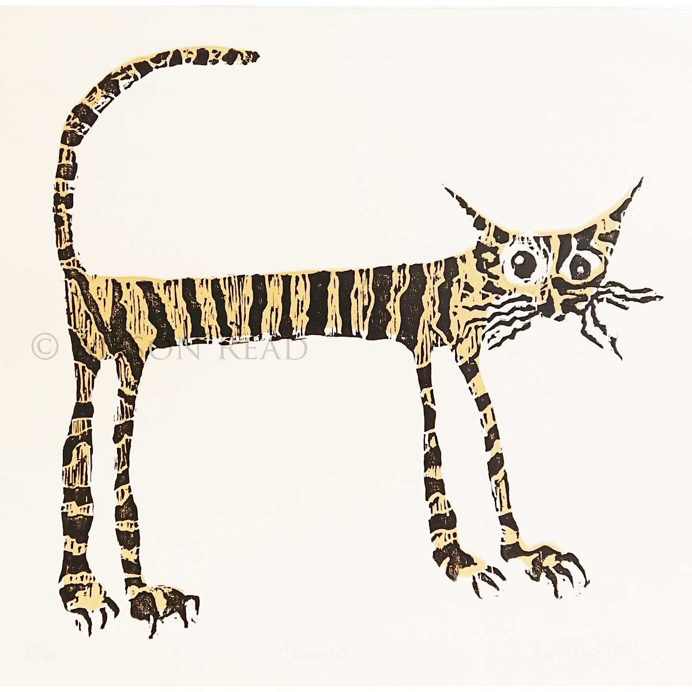

| Cica nevek | Szín | Rondaság skála(1-10) | Képek |
|---|---|---|---|
| Cica 1 | Szürke | 7 |
|
| Cica 2 | Fehér | 6 |
|
| Cica 3 | Szürke/fekete | 10 |
|
| Cica 4 | Vörös | 8 |
|
| Cica 5 | Szürke | 10 |
|
| Cica 6 | Fehér/Szürke | 5 |
|
| Cica 7 | Tigrisxd | 3 |

|
| Cica 8 | Bőrszín | 4 |

|